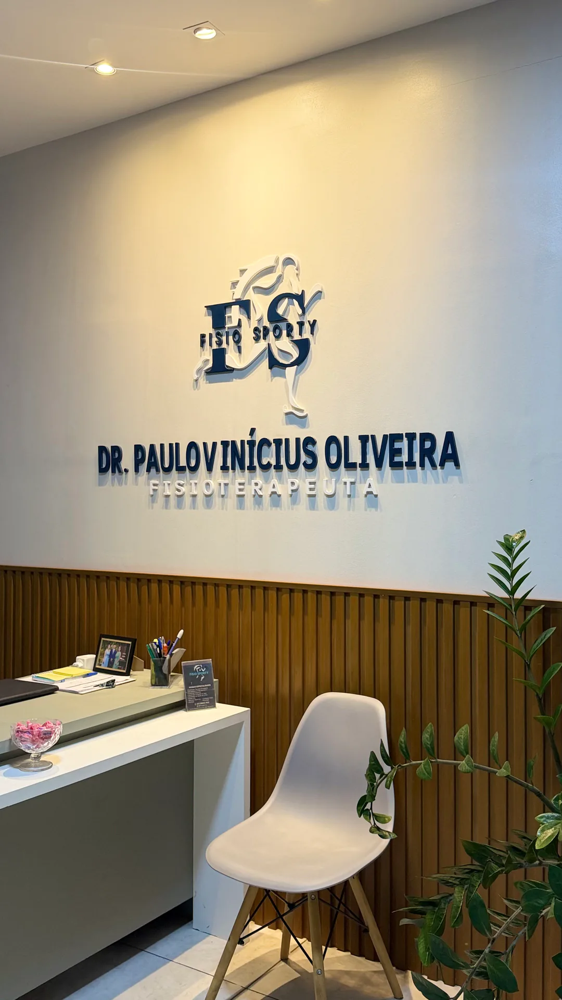
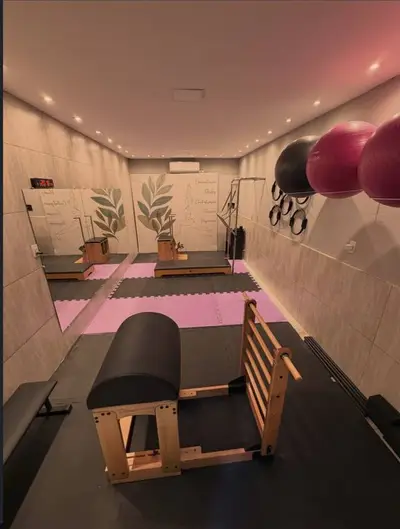
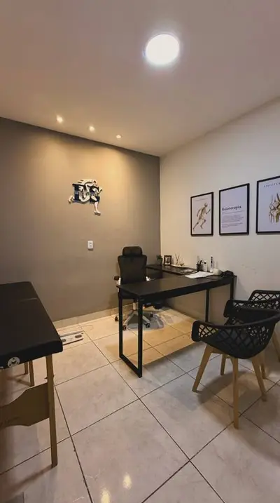
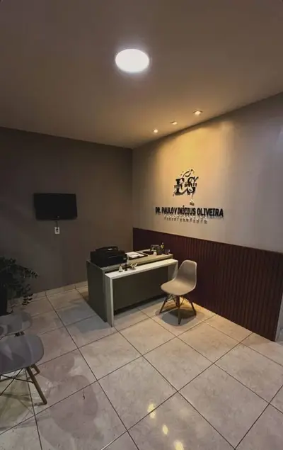
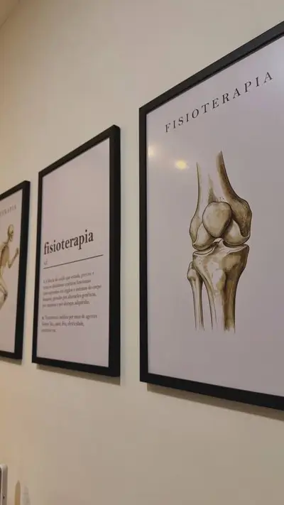

Dr. Wanderson Vasco
Fisioterapeuta · CREFITO 444739-F-F
- Fisioterapia Traumato Ortopédica
- Fisioterapia Esportiva
- Fisioterapia na Saúde do Idoso
- Reabilitação em Coluna Vertebral

Centro Integrado de Saúde · Pesqueira-PE
Fisioterapia para toda a família, do esportista ao idoso. Tratamento personalizado, com equipe de fisioterapeutas especializados.
Escolha o que mais combina com a sua situação e fale direto com a clínica. A mensagem já vai pronta no WhatsApp.
Não consegue vir até a clínica? Temos atendimento domiciliar para quem precisa de cuidado no conforto de casa.
Saber sobre atendimento domiciliar
Sala de Pilates
Consultório
Recepção
AmbienteProfissionais com registro e especialização nas áreas em que atuam. Escolha com quem quer agendar.
Fisioterapeuta · CREFITO 444739-F-F
Fisioterapeuta · CREFITO 453183
Fisioterapeuta · CREFITO 448701-F
Fisioterapeuta · CREFITO 368812-F
Fisioterapeuta · CREFITO 396499-F
Nutricionista · CRN 28323
Nutricionista · CRN 50250
Psicólogo · CRP 02/26848
Conte o que você sente e escolha um horário.
Um fisioterapeuta analisa o seu caso com atenção.
Plano personalizado para a sua recuperação e bem-estar.
Abre segunda-feira às 07:00. Confirme os demais horários pelo WhatsApp.
Para quem não consegue ir até a clínica.
Mapa: Fisio Sporty na Av. Dom Adalberto Sobral, Prado, Pesqueira-PE.
Abrir no Google MapsPelo WhatsApp (87) 99802-7603. Conte o que você sente e escolha um horário. Na primeira consulta, um fisioterapeuta faz a avaliação do seu caso.
Confirme a duração com a clínica pelo WhatsApp ao agendar.
Consulte convênios e formas de pagamento pelo WhatsApp.
Pergunte à clínica pelo WhatsApp o que levar no dia da avaliação.
Sim. A Fisio Sporty tem atendimento domiciliar para quem precisa de cuidado no conforto de casa.
Sim. A clínica atende todas as idades, da criança ao idoso, com fisioterapia pediátrica e saúde do idoso.